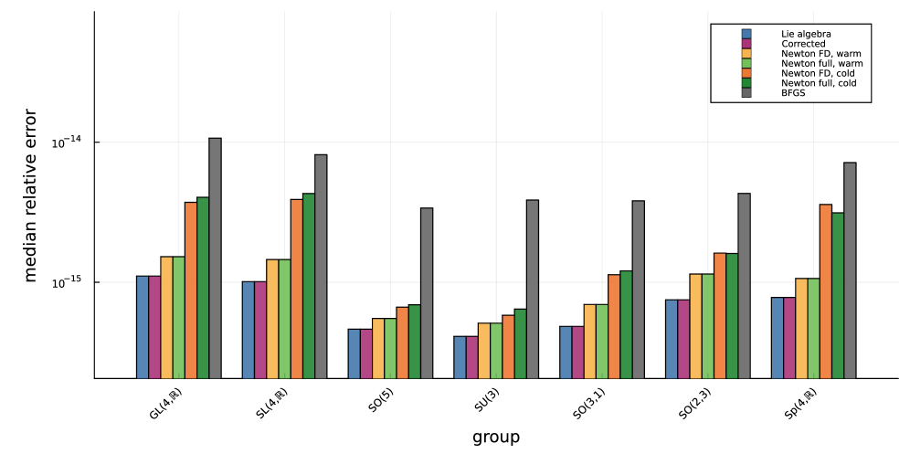
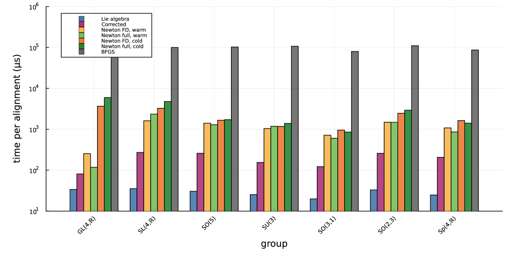

Lean 4 with Mathlib formally proves the Lie algebra projection formulas, their least-squares optimality, the complex-to-real embedding identity, and the correction identity.
Abstract
Two observers of the same physical system may differ in gauge by a group element acting on their common vector representations, and recovering that element from finite, noisy paired observations is useful in both theory and experiment. The Kabsch and Horn algorithms solve this problem for rotated frames in $\mathbb R^3$ (i.e. $SO(3)$); our earlier Lie algebra method extends it to the Lorentz group $SO(3,1)_+$. Here we report explicit formulae for the Lie algebra method on the classical matrix Lie groups ($GL(n)$, $SL(n)$, $SO(n)$, $U(n)$, $SO(p,q)$, $Sp(n)$, $Spin(n)$, and $SE(n)$) over the real and complex fields. The four steps (pseudoinverse, matrix logarithm, projection onto the Lie algebra, matrix exponential) are exact for noiseless data. Only the projection is group-dependent, and we show it yields the unique least squares-optimal element of the Lie algebra whenever its image lies in $\mathfrak g$ and its residual is orthogonal to $\mathfrak g$. For noisy data the method is optimal only to leading order, so we add a quasi-Newton correction whose accuracy interpolates between the uncorrected method and direct least squares optimization. The projections, their optimality, and the identity underlying the correction are formally proven in Lean 4.31.0 with Mathlib, and numerical experiments are benchmarked in Julia.
Problem
The task is to recover a group element g relating two observers' gauges from noisy paired vector observations, for general classical matrix Lie groups. Kabsch/Horn methods only cover SO(3), and noncompact groups or indefinite metrics break the standard approaches.
Approach
The Lie algebra method computes the pseudoinverse estimate g0 = YX^+, takes its matrix logarithm, projects onto the Lie algebra, and exponentiates. Closed-form projections are given for GL, SL, SO, U, SU, SO(p,q), Sp, Spin, and SE over the reals and complexes. For noisy data, a quasi-Newton correction is added. The projections, their optimality, the real embedding of complex matrices commuting with exp, and the identity behind the correction are proven in Lean 4.31.0 with Mathlib. Numerical experiments are run in Julia.
Results
The method is exact on noiseless data for all groups, with errors of 1e-15 to 1e-13. On SO(4) with noise, the correction reaches the same least-squares optimum as automatic-differentiation Newton methods at about 8x the baseline cost, versus at least 35x for the fastest Newton variant.

Figure 1: Median relative recovery error \|g_{\text{est}}-g_{\text{GT}}\|/\|g_{\text{GT}}\| (log scale) in the noiseless case across the classical groups, for six methods: the Lie algebra method estimate, the correction of § 2.4 , and automatic-differentiation Newton in four configurations (finite-difference vs. exact forward-over-reverse Hessian, each warm-started from the closed-form estimate or

Figure 2: Median wall-clock time per alignment across the classical groups (log scale), for the same six methods as Fig. 1 (additive noise \epsilon=0.05 ). The Lie algebra method and the correction of § 2.4 , which use only dense linear algebra, are roughly one to two orders of magnitude faster than the automatic-differentiation Newton variants, which re-exponentiate at every step; among those, th
method
median time
vs. Lie
recovery error
Lie algebra (baseline)
14 µs
1.0×
4.146e-2
correction
110 µs
8.1×
3.545e-2
AD-Newton, FD Hessian, cold
922 µs
68×
3.545e-2
AD-Newton, full Hessian, warm
472 µs
35×
3.545e-2
SO(4) benchmark, noise ε=0.05, medians over 1000 trials